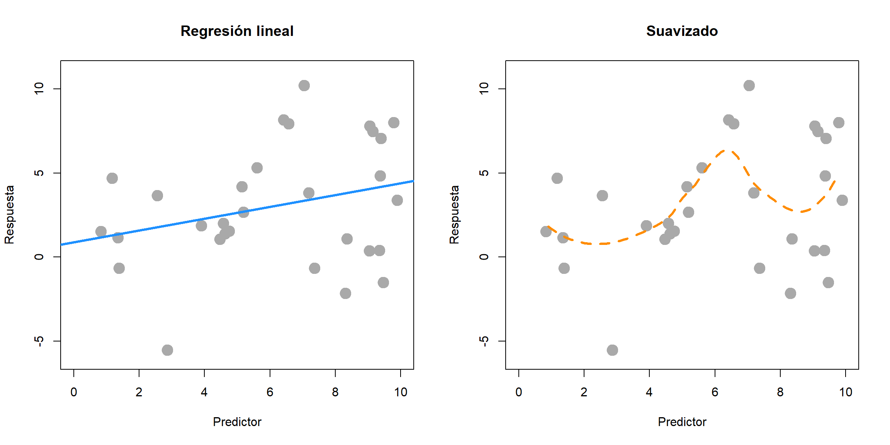
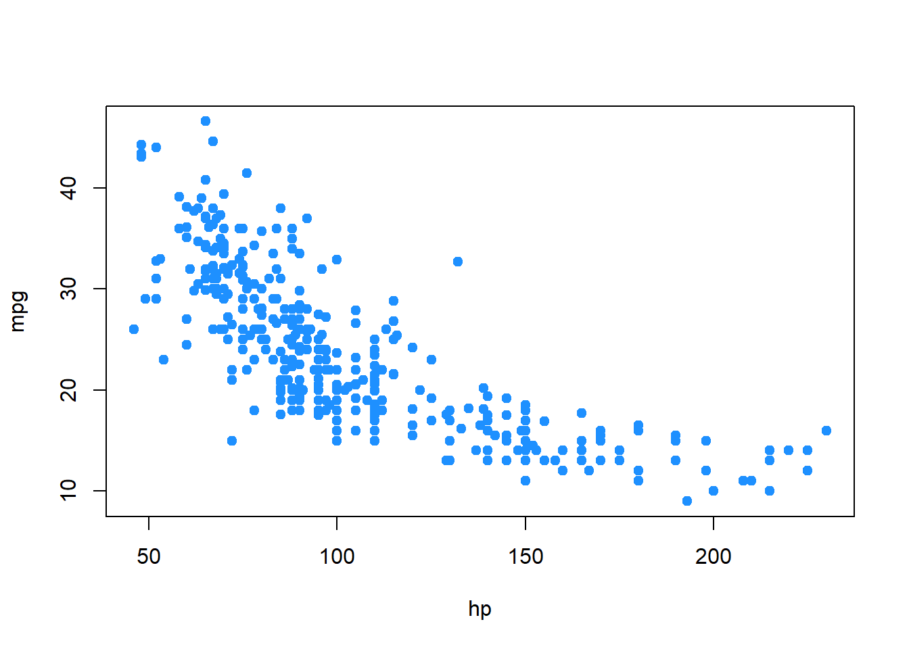
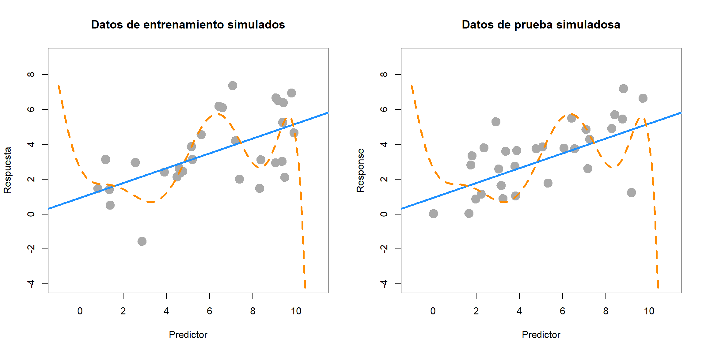

Capítulo 15 Construcción del modelo
“Los estadísticos, como los artistas, tienen la mala costumbre de enamorarse de sus modelos.”
— George Box
Demos un paso atrás y consideremos el proceso de encontrar un modelo de datos en un nivel superior. Estamos intentando encontrar un modelo para una variable de respuesta \(y\) basado en varios predictores \(x_1, x_2, x_3, \ldots, x_{p-1}\).
Esencialmente, estamos tratando de descubrir la relación funcional entre \(y\) y los predictores. En el capítulo anterior, estábamos ajustando modelos para la eficiencia de combustible de un automóvil (mpg) en función de sus atributos (wt, year, cyl, disp, hp, acc). También consideramos que \(y\) es una función con algo de ruido. Rara vez, si es que alguna vez, esperamos que haya una relación funcional exacta entre los predictores y la respuesta.
\[ y = f(x_1, x_2, x_3, \ldots, x_{p-1}) + \epsilon \]
Podemos pensar en esto como
\[ \text{respuesta} = \text{señal} + \text{ruido}. \]
Podríamos considerar todo tipo de funciones complicadas para \(f\). Es probable que encuentre varias formas de hacer esto en futuros cursos de aprendizaje automático. Hasta ahora, en este curso nos hemos centrado en la regresión lineal (múltiple). Es decir
\[ \begin{aligned} y &= f(x_1, x_2, x_3, \ldots, x_{p-1}) + \epsilon \\ &= \beta_0 + \beta_1 x_{1} + \beta_2 x_{2} + \cdots + \beta_{p-1} x_{p-1} + \epsilon \end{aligned} \]
En el panorama general de los posibles modelos que podríamos ajustar a estos datos, este es un modelo bastante restrictivo. ¿Qué entendemos por modelo restrictivo?
15.1 Familia, forma, y ajuste.
Al modelar datos, hay una serie de opciones que deben tomarse.
- ¿Qué familia de modelos se considerará?
- ¿Qué forma del modelo se utilizará?
- ¿Cómo se ajustará el modelo?
discutamos cada una de estas opciones.
15.1.1 Ajuste.
Considere uno de los modelos más simples que podríamos ajustar a los datos, la regresión lineal simple.
\[ y = f(x_1, x_2, x_3, \ldots, x_{p-1}) + \epsilon = \beta_0 + \beta_1 x_{1} + \epsilon \]
Entonces, aquí, a pesar de tener múltiples predictores, elegimos usar solo uno. ¿Cómo ajusta este modelo? Usaremos casi exclusivamente el método de mínimos cuadrados, pero recuerde, habíamos visto métodos alternativos para ajustar este modelo.
\[ \underset{\beta_0, \beta_1}{\mathrm{argmin}} \max|y_i - (\beta_0 + \beta_1 x_i)| \]
\[ \underset{\beta_0, \beta_1}{\mathrm{argmin}} \sum_{i = 1}^{n}|y_i - (\beta_0 + \beta_1 x_i)| \]
\[ \underset{\beta_0, \beta_1}{\mathrm{argmin}} \sum_{i = 1}^{n}(y_i - (\beta_0 + \beta_1 x_i))^2 \]
Cualquiera de estos métodos (siempre usaremos el último, mínimos cuadrados) obtendrá estimaciones de los parámetros desconocidos \(\beta_0\) y \(\beta_1\). Dado que esas son las únicas incógnitas del modelo especificado, hemos ajustado el modelo. El modelo ajustado es entonces
\[ \hat{y} = \hat{f}(x_1, x_2, x_3, \ldots, x_{p-1}) = \hat{\beta}_0 + \hat{\beta}_1 x_{1} \]
Tenga en cuenta que ahora hemos eliminado el término para el ruido. No hacemos ningún esfuerzo por modelar el ruido, solo la señal.
15.1.2 Forma
¿Cuáles son las diferentes formas que puede adoptar un modelo? Actualmente, para los modelos lineales que hemos considerado, el único método para alterar la forma del modelo es controlar los predictores utilizados. Por ejemplo, una forma del modelo de regresión lineal múltiple es la regresión lineal simple.
\[ y = f(x_1, x_2, x_3, \ldots, x_{p-1}) + \epsilon = \beta_0 + \beta_1 x_{1} + \epsilon \]
También podríamos considerar un modelo SLR con un predictor diferente, alterando así la forma del modelo.
\[ y = f(x_1, x_2, x_3, \ldots, x_{p-1}) + \epsilon = \beta_0 + \beta_2 x_{2} + \epsilon \]
A menudo, usaremos múltiples predictores en nuestro modelo. Frecuentemente, probaremos al menos un modelo con todos los predictores posibles. \[ \begin{aligned} y &= f(x_1, x_2, x_3, \ldots, x_{p-1}) + \epsilon \\ &= \beta_0 + \beta_1 x_{1} + \beta_2 x_{2} + \cdots + \beta_{p-1} x_{p-1} + \epsilon \end{aligned} \]
También podríamos utilizar algunos, pero no todos, los predictores.
\[ \begin{aligned} y &= f(x_1, x_2, x_3, \ldots, x_{p-1}) + \epsilon \\ &= \beta_0 + \beta_1 x_{1} + \beta_3 x_{3} + \beta_5 x_{5} + \epsilon \end{aligned} \]
Estas formas son restrictivas en dos sentidos. Primero, solo permiten relaciones lineales entre la respuesta y los predictores. Esto parece una restricción obvia de los modelos lineales, pero de hecho, pronto veremos cómo usar modelos lineales para relaciones no lineales. (Implicará la transformación de variables). En segundo lugar, la forma en que una variable afecta la respuesta es la misma para cualquier valor de los otros predictores. Pronto veremos cómo crear modelos donde el efecto de \(x_{1}\) puede ser diferente para diferentes valores de \(x_{2}\). Discutiremos el concepto de interacción.
15.1.3 Familia
Una familia de modelos es una agrupación más amplia de muchas formas posibles de un modelo. Por ejemplo, arriba vimos varias formas de modelos de la familia de modelos lineales. Solo nos ocuparemos de los modelos lineales, que modelan una respuesta como una combinación lineal de predictores. Ciertamente existen otras familias de modelos.
Por ejemplo, hay varias familias de regresión no paramétrica. El suavizado es una amplia familia de modelos. Como son los árboles de regresión.
En la regresión lineal, especificamos modelos con parámetros \(\beta_j\) y ajustamos el modelo encontrando los mejores valores de estos parámetros. Este es un enfoque paramétrico. Un enfoque no paramétrico omite el paso de especificar un modelo con parámetros y, a menudo, se describe más como un algoritmo. Los modelos no paramétricos se utilizan a menudo en el aprendizaje automático.

Aquí, SLR (paramétrico) se usa a la izquierda, mientras que suavizado (no paramétrico) se usa a la derecha. SLR encuentra la mejor pendiente e intersección. El suavizado produce el valor \(y\) ajustado a un valor \(x\) particular al considerar los valores \(y\) de los datos en una vecindad del valor \(x\) considerado. (Suavizado local.)
¿Por qué centrarse en modelos lineales? Dos grandes razones:
- Los modelos lineales son el modelo de referencia. Los modelos lineales han existido durante mucho tiempo y son computacionalmente fáciles. Es posible que un modelo lineal no sea el modelo final que utilice, pero a menudo debería ser el primer modelo que pruebe.
- Las ideas detrás de los modelos lineales se pueden transferir fácilmente a otras técnicas de modelado.
15.1.4 Modelo asumido, modelo ajustado
Cuando buscamos un modelo, a menudo necesitamos hacer suposiciones. Estos supuestos están codificados en la familia y forma del modelo. Por ejemplo
\[ y = \beta_0 + \beta_1 x_{1} + \beta_3 x_{3} + \beta_5 x_{5} + \epsilon \]
se asume que \(y\) es una combinación lineal de \(x_ {1}\), \(x_ {3}\) y \(x_ {5}\), y también algo de ruido. Esto supone que el efecto de \(x_{1}\) en \(y\) es \(\beta_1\), que es el mismo para todos los valores de \(x_{3}\) y \(x_{5}\). Es decir, estamos usando la familia de modelos lineales con una forma particular.
Supongamos que luego ajustamos este modelo a algunos datos y obtenemos el modelo ajustado. Por ejemplo, en R usaríamos
fit = lm(y ~ x1 + x3 + x5, data = some_data)Esta es la forma en R de decir que la familia es lineal y de especificar la forma de arriba. Un modelo aditivo con los predictores especificados, así como una intersección. Entonces obtenemos
\[ \hat{y} = 1.5 + 0.9 x_{1} + 1.1 x_{3} + 2.3 x_{5}. \]
Esta es nuestra mejor suposición para la función \(f\) en
\[ y = f(x_1, x_2, x_3, \ldots, x_{p-1}) + \epsilon \]
para la familia y forma asumidas. Ajustar un modelo solo nos da el mejor ajuste para la familia y la forma que especificamos. Entonces la pregunta natural es; ¿Cómo elegimos la familia y la forma correctas? Nos facalizaremos en forma ya que nos centramos en la familia de modelos lineales.
15.2 Explicación versus predicción
¿Cuál es el propósito de ajustar un modelo a los datos? Por lo general, es para lograr uno de dos objetivos. Podemos usar un modelo para explicar la relación entre la respuesta y los predictores. Los modelos también se pueden utilizar para predecir la respuesta en función de los predictores. A menudo, un buen modelo hará ambas cosas, pero discutiremos ambos objetivos por separado, ya que el proceso de encontrar modelos para explicar y predecir tiene algunas diferencias.
Para nuestros propósitos, dado que solo estamos considerando modelos lineales, buscar un buen modelo es esencialmente buscar una buena forma de un modelo.
15.2.1 Explicación
Si el objetivo de un modelo es explicar la relación entre la respuesta y los predictores, buscamos un modelo que sea pequeño e interpretable, pero que se ajuste bien a los datos. Cuando se habla de modelos lineales, el tamaño de un modelo es esencialmente el número de parámetros \(\beta\) utilizados.
Supongamos que nos gustaría encontrar un modelo que explique la eficiencia del combustible (mpg) en función de los atributos de un automóvil (wt, year,cyl, disp,hp, acc). Quizás somos un fabricante de automóviles que intenta diseñar un vehículo de bajo consumo de combustible. Si este es el caso, estamos interesados en qué variables predictoras son útiles para explicar la eficiencia de combustible del automóvil y en cómo esas variables afectan la eficiencia de combustible. Al comprender esta relación, podemos utilizar este conocimiento en nuestro beneficio al diseñar un automóvil.
Para explicar una relación, nos interesa mantener los modelos lo más pequeños posible, ya que los modelos más pequeños son fáciles de interpretar. Cuantos menos predictores, menos consideraciones debemos tener en cuenta en nuestro proceso de diseño.
Tenga en cuenta que los modelos lineales de cualquier tamaño son bastante interpretables para empezar. Más adelante en sus carreras de análisis de datos, verá modelos más complicados que pueden ajustarse mejor a los datos, pero son mucho más difíciles, si no imposibles, de interpretar. Estos modelos no son tan útiles para explicar una relación. Esta es otra razón para intentar siempre un modelo lineal. Si ajusta tan bien como con los métodos más complicados, será el más fácil de entender.
Para encontrar modelos pequeños e interpretables, eventualmente usaremos procedimientos de selección, que buscan entre muchas formas posibles de un modelo. Por ahora haremos esto de una manera más ad-hoc usando técnicas de inferencia que ya hemos encontrado. Para usar la inferencia como la hemos visto, necesitamos un supuesto adicional además de la familia y la forma del modelo.
\[ y = \beta_0 + \beta_1 x_{1} + \beta_3 x_{3} + \beta_5 x_{5} + \epsilon \]
Nuestra suposición adicional se refiere al término de error.
\[ \epsilon \sim N(0, \sigma^2) \]
Esta suposición de que los errores se distribuyen normalmente con alguna variación común es la clave de todas las inferencias que hemos hecho hasta ahora. Discutiremos esto con gran detalle más adelante.
Entonces, con nuestras herramientas de inferencia (ANOVA y $ t $ -test) tenemos dos estrategias potenciales. Comience con un modelo muy pequeño (sin predictores) e intente agregar predictores. O bien, comience con un modelo grande (todos los predictores) e intente eliminarlos.
15.2.1.1 Correlación y causalidad
Una advertencia al usar un modelo para explicar una relación. Hay dos términos que se utilizan a menudo para describir una relación entre dos variables: causalidad y correlación. Correlación a menudo también se conoce como asociación.
El hecho de que dos variables estén correlacionadas no significa necesariamente que una cause la otra. Por ejemplo, considere modelar mpg solo como una función dehp.
plot(mpg ~ hp, data = autompg, col = "dodgerblue", pch = 20, cex = 1.5)
¿Un aumento en los caballos de fuerza causa una disminución en la eficiencia del combustible? O quizás la causalidad se invierte y un aumento en la eficiencia del combustible causa una disminución en los caballos de fuerza. ¡O quizás haya una tercera variable que explique ambos!
El problema aquí es que tenemos datos de observación. Con datos de observación, solo podemos detectar asociaciones. Para hablar con confianza sobre causalidad, necesitaríamos realizar experimentos. A menudo, esta decisión se toma por nosotros, antes de que veamos los datos, por lo que solo podemos modificar nuestra interpretación.
Discutiremos esto más a fondo cuando analicemos el diseño experimental y las técnicas tradicionales de ANOVA. (Todo lo cual ha sido rebautizado recientemente como prueba A/B).
15.2.2 Predicción
Si el objetivo de un modelo es predecir la respuesta, entonces la única consideración es qué tan bien se ajusta el modelo a los datos. Para ello, necesitaremos una métrica. En los problemas de regresión, suele ser RMSE.
\[ \text{RMSE}(\text{model, data}) = \sqrt{\frac{1}{n} \sum_{i = 1}^{n}(y_i - \hat{y}_i)^2} \]
donde
- \(y_i\) son los valores reales de la respuesta para los datos dados
- \(\hat{y}_i\) son los valores predichos usando el modelo ajustado y los predictores de los datos
Aquí la correlación y la causalidad no son un problema. Si un predictor está correlacionado con la respuesta, es útil para la predicción. Por ejemplo, en los niños en edad de escuela primaria, la talla de su zapato ciertamente no hace que lean a un nivel superior, sin embargo, podríamos usar la talla de un zapato muy fácilmente para hacer una predicción sobre la capacidad de lectura de un niño. Cuanto mayor sea el tamaño de sus zapatos, mejor leen. Sin embargo, hay una variable al acecho aquí, ¡su edad! (No envíe a sus hijos a la escuela con zapatos de talla 40, ¡no les hará leer mejor!)
Además, dado que no estamos realizando inferencias, no se necesita la suposición adicional sobre los errores. Lo único que nos importa es qué tan cerca está el modelo ajustado de los datos. Los mínimos cuadrados son mínimos cuadrados. Para un modelo específico, encontrará los valores de los parámetros que minimizarán la pérdida por error al cuadrado. Sus resultados pueden ser en gran parte ininterpretables e inútiles para la inferencia, pero para la predicción nada de eso importa.
Supongamos que en lugar del fabricante al que le gustaría fabricar un automóvil, somos un consumidor que desea comprar un automóvil nuevo. Sin embargo, este automóvil en particular es tan nuevo que no ha sido probado rigurosamente, por lo que no estamos seguros de qué eficiencia de combustible esperar. (Y, como escépticos, no confiamos en lo que nos dice el fabricante). En este caso, nos gustaría usar el modelo para ayudar a predecir la eficiencia de combustible de este automóvil en función de sus atributos, que son los predictores del modelo. Cuanto menores son los errores que comete el modelo, más confianza tenemos en su predicción.
15.2.2.1 División de Entrenamiento-Prueba
El problema de usar el RMSE para identificar qué tan bien se ajusta un modelo a los datos es que RMSE es siempre (igual o) más bajo para un modelo grande. Esto sugeriría que siempre deberíamos usar el modelo más grande posible cuando busquemos un modelo que prediga bien. El problema con esto es la posibilidad de sobreajustar a los datos. Por lo tanto, queremos un modelo que se adapte bien, pero que no se adapte demasiado. Para comprender el sobreajuste, debemos pensar en aplicar un modelo a los datos visibles y no visibles.
Suponga que ajustamos un modelo usando todos los datos disponibles y evaluamos el RMSE en este modelo ajustado y todos los datos vistos. Llamaremos a estos, los datos y RMSE de entrenamiento.
Ahora, supongamos que encontramos mágicamente algunos datos adicionales. Para evaluar realmente qué tan bien predice el modelo, debemos evaluar qué tan bien nuestros modelos predicen la respuesta de estos datos. Llamaremos a estos, los datos y RMSE de prueba.
- RMSE de entrenamiento: ajuste del modelo en datos vistos, evaluado en datos vistos
- RMSE de prueba: ajuste del modelo en datos vistos, evaluado en datos no vistos
A continuación, simulamos algunos datos y ajustamos dos modelos. Llamaremos a la línea azul sólida el modelo “simple”. La línea naranja discontinua se denominará modelo “complejo”, que se ajustó con métodos que aún no conocemos.

El panel de la izquierda muestra los datos que se utilizaron para ajustar los dos modelos. Claramente, el modelo “complejo” se ajusta mucho mejor a los datos. El panel de la derecha muestra datos adicionales que se simularon de la misma manera que los datos originales. Aquí vemos que el modelo “simple” ajusta mucho mejor. La línea discontinua naranja casi parece aleatoria.
| Modelo | RMSE de Entrenamiento | RMSE de Prueba |
|---|---|---|
| Simple | 1.71 | 1.45 |
| Complejo | 1.41 | 2.07 |
El modelo más “complejo” y ondulado se ajusta mucho mejor a los datos de entrenamiento, ya que tiene un RMSE de entrenamiento mucho más bajo. Sin embargo, vemos que el modelo “simple” se ajusta mucho mejor a los datos de prueba, con un RMSE de prueba mucho más bajo. Esto significa que el modelo complejo ha sobreajustado los datos y nosotros preferimos el modelo simple. Al elegir un modelo para la predicción, preferimos un modelo que predice datos invisibles.
En la práctica, no puede simplemente generar más datos para evaluar sus modelos. En su lugar, dividimos los datos existentes en datos utilizados para ajustar el modelo (entrenamiento) y datos utilizados para evaluar el modelo (prueba). Nunca ajuste un modelo con datos de prueba.
15.3 Resumen
Los modelos se pueden utilizar para explicar relaciones y predecir observaciones.
Al usar el modelo para,
- explicar; preferimos modelos pequeños e interpretables.
- predecir; preferimos modelos que cometan los errores más pequeños posibles, sin sobreajuste.
Los modelos lineales pueden lograr ambos objetivos. Más adelante, veremos que a menudo un modelo lineal que logra uno de estos objetivos, generalmente logra el otro.